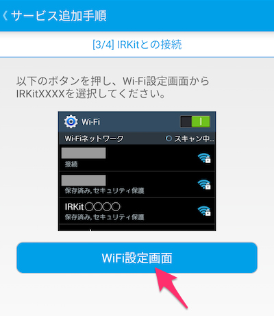

IRKitプラグインの使い方
IRKitは、WiFi機能の付いたオープンソースな赤外線リモコンデバイス。 家庭のエアコンやテレビ、ライトなど、赤外線で操作できる家電を、 WiFiをとおして、iPhoneやiPad,Androidスマートフォンなどから操作できるようにするものです。 IRKitプラグインは、赤外線の取得・送信の他に、仮想的なデバイスとして赤外線で操作できるライトとTVを作成することができ、それらをDeviceConnectのAPIで操作することできます。
プラグインのインストール
IRKit用のDeviceConnectプラグインをビルドするか、Androidであればビルドしたapkファイルを取得、インストールしてください。
セットアップ
IRKitにACアダプタから電源を供給されたMicroUSBケーブルを挿入すると電源が入ります。
プラグインとデバイスの接続
IRKit本体
IRKitの設定画面を開き、追加をタップしてください。 IRKitに電源が入っている状態で、２ページ目に遷移してください。 2ページ目で、IRKitを接続するWiFiの情報を入力して次のページに遷移してください。
正常にWiFi情報が入力されている場合は、以下のようなダイアログが表示されます。
ダイアログを閉じ、WiFi設定画面ボタンをタップしてください。

AndroidのWiFi設定画面でIRKitと接続し、接続が完了した後に先ほどのIRKitの設定画面に戻ります。
正常にIRKitに接続されている場合は、以下のダイアログが表示されます。
ダイアログを閉じ、次のページを開いてください。 WiFi情報の送信ボタンをタップして、IRKitに接続先のWiFi情報を送ります。
WiFiの情報が正常に送信できると成功ダイアログが表示されます。
その後、Android端末を元々接続していたWiFiルータに接続すると、IRKitが設定画面で見つかるはずです。
仮想デバイス
仮想デバイスの作成
IRKitプラグインでは、赤外線信号をあらかじめ登録しておくことで、ライトとTVデバイスを仮想的に作成することができます。
IRKitの設定画面で、接続されているIRKitをタップしてください。
仮想サービス作成画面が表示されるので、追加ボタンをタップしてください。

作成する仮想デバイスを選択してください。
作成するデバイスの名前を決めることができます。その後、作成をタップしてください。
仮想デバイスの作成が完了すると、以下のダイアログが表示されます。
赤外線の登録
作成した仮想デバイスには、赤外線を登録する必要があります。 仮想デバイスに赤外線を登録するには、まずデバイスをタップします。
登録したい赤外線の登録ボタンをタップしてください。
受信ボタンをタップしてください。
「赤外線をIRKitに照射してください」のダイアログが出ている間にIRKitに赤外線を照射してください。 成功するとそのことを告げるダイアログが表示されます。
プラグインとデバイスの切断
IRKit本体
IRKit本体の電源をOFFにすることで切断できます。 本体の電源をOFFにすることで、そのデバイスに属している仮想デバイスとも切断することができます。
仮想デバイス
仮想デバイスと切断する場合は、仮想デバイス登録画面で削除ボタンをタップしてください。
削除したい仮想デバイスにチェックを入れて、削除ボタンをもう一度タップしてください。
確認ダイアログが表示されますので、削除をタップすると仮想デバイスが削除されます。
プラグインがサポートしている機能
プラグインがサポートしている機能は次の通りです。